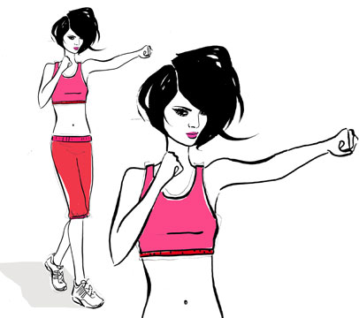
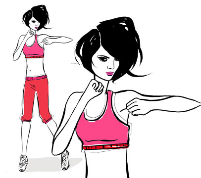
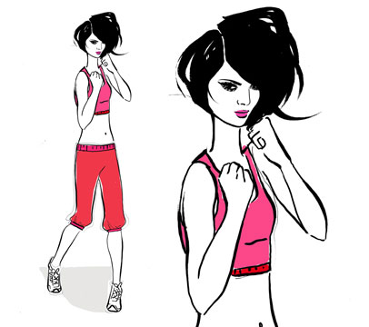
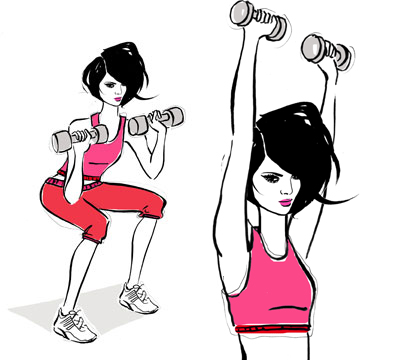
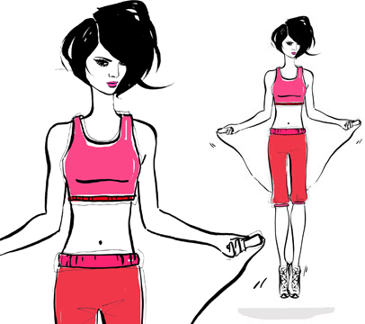

Canadian boxer Mary Spencer was born in the small town of Wiarton, Ontario, the fourth of five children. She spent most of her childhood in Windsor, Ontario, where she showed athletic promise as a soccer, volleyball, and all-city basketball player.
At age 17, she wandered into the Windsor Amateur Boxing Club. Her hard work and athleticism grabbed the attention of Olympic boxing coach Charlie Stewart, and 18 months later, she won her first Canadian Championship. In the years that followed, she would go on to win seven more Canadian championships, three world championships, and five Pan American Championships.
This summer, Mary hopes to make history as one of the first female middleweight boxers to ever compete at the Olympic Games. Not to worry, fellow Marlen Esparza fights in the flyweight class, giving COVERGIRLs two chances to bring home the gold in boxing!
In the women's Olympic boxing tournament, boxers are paired off at random and fight in a single-elimination tournament, with the winner advancing to the next round and the loser dropping out of the competition.
Winning boxers progress through the preliminary rounds to the quarterfinals and semifinals. The two semifinal winners fight for the gold and silver medals, while both losing semifinalists receive bronze medals.
Boxing Basics
A boxing bout consists of four 2-minute rounds. Bouts can be won either by knockout or on points.
A point is awarded for a scoring hit with the marked part of the glove on the opponent's head or body. When two boxers trade blows in a flurry of infighting, the judges wait until the end of the exchange and award a point to the boxer who got the better of it.
At the end of the bout, when each judge's points have been totaled, the boxer awarded the most points by a majority of the judges is declared the winner.
She's a Knockout
During a bout, a boxer is considered down if, as a result of being hit, she touches the floor with any part of her body besides her feet. She is also down if she is even partly outside the ropes or if she is standing but unable to continue.
When a boxer is down, the referee starts counting from one to 10 seconds. If the boxer is still down after 10 seconds, the opponent wins on a knockout.
Stand with your feet hip-distance apart, right foot in front, knees slightly bent. Bring your fists up, right fist slightly in front of the left, palms facing each other and elbows close to your body. This is your fighting stance. Punch the right fist straight in front of you at shoulder level, rotating your torso and fully extending your arm. Do not lock your elbow. Quickly return to fighting stance.
Perform 12 jabs with the right foot forward then switch to the left foot for 12 jabs.

cross
Start in fighting stance with right foot in front. Punch the left fist across your body at shoulder level, rotating your torso and fully extending your arm. Do not lock your elbow. Quickly return to fighting stance.
Perform 12 cross punches with the right foot forward then switch to the left foot for 12 cross punches. For the second set, throw a jab followed by a cross. Repeat 6 times on the right and left sides.

hook
Start in fighting stance, with your right leg and arm in front. Pivot on the ball of your right foot as you punch sideways, from right to left, with your right hand.
Perform 12 hooks with the right foot forward then switch to the left foot for 12 hooks.

Uppercut
Start in fighting stance with your right leg and arm in front. Drop your left arm slightly, keeping it close to the body. Thrust your left fist up and slightly forward with the knuckles facing the ceiling.
Perform 12 uppercuts with the right foot forward, then switch to the left foot for 12 uppercuts. For the second set, throw a hook, followed by an uppercut. Repeat 6 times on the right and left sides.

Squat to Press
Holding 5-pound dumbbells, stand with your feet hip-distance apart, knees and ankles in line with the hips. Hold the weights at your shoulders, lifting your chest and pulling your shoulders back. Bend at the hips and squat as if sitting in an imaginary chair. As you stand up, press the weights straight overhead.
Do 2 sets of 12 repetitions.

Jump Rope
You can do this exercise with an actual jump rope or without one. Jump 1 to 2 inches off the floor so the rope barely passes beneath the feet. When landing, only the balls of the feet should touch the floor. Keep the elbows close to the sides as you turn the rope. The movement comes from the wrists and forearms, not the shoulders. Mix it up by jumping on one foot, alternating from left to right.